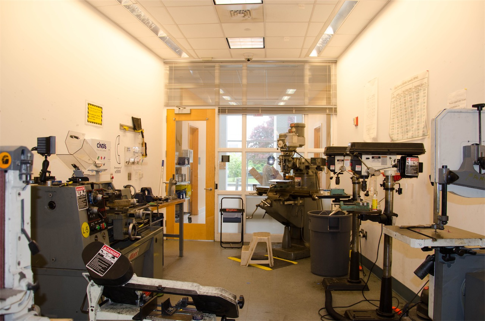
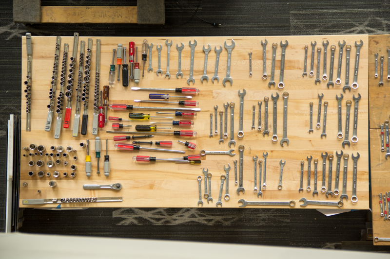

The primary function of The Workshop was to be a space that enables students to continue making after the main shop closes. However, it was in a state of disarray.
There was a perpetuated culture of lack of respect for the space: machines were not cleaned, benchtops were left cluttered with tools and scrap metal, and tools were
taken and not returned. These behaviors were enabled by the community view that the space was considered separate and distinct from the main shop, and thus did not .
This divide between the “main” and “mini” shops was primarily a result of the lack of formal ownership of the mini-shop by any member of the shop staff.

A common problem faced by users of the shop is not being able to find the necessary tool when one needs it.
Tools can be distributed throughout the space, thrown haphazardly in drawers, or sometimes "borrowed" indefinitely. This means that
sometimes one spends more time looking for the right tool than actually using it. This can lead to people either misusing tools
that they can quickly find or getting frustrated with the state of the shop. We would also like to encourage users of the shop
to put tools back where they belong as they finish using them and discourage them from leaving tools out for extended periods of time.
Tools should be as easy to return as they are to find.